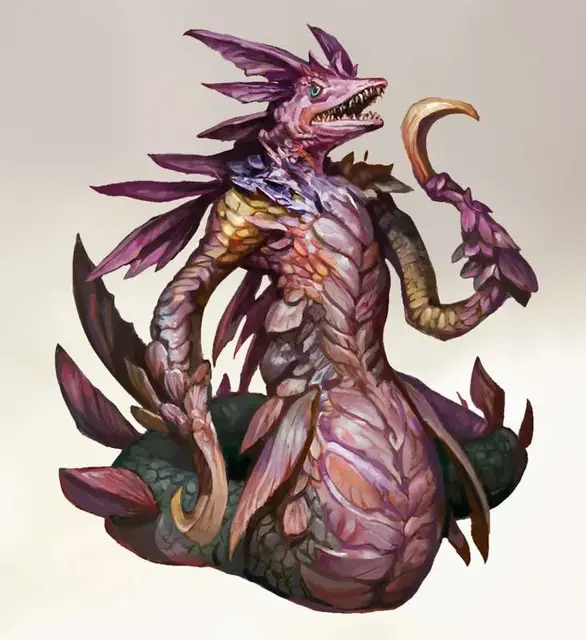

Вастрилит
Wastrilith
Большое Исчадие (Демон), обычно хаотично-злое

Класс Доспеха 18 (природный доспех)
Хиты 157 (15к10 + 75)
Скорость 30 футов, плавая 80 футов
| мод | спас | ||
|---|---|---|---|
| СИЛ | 19 | +4 | +9 |
| ЛОВ | 18 | +4 | +4 |
| ТЕЛ | 21 | +5 | +10 |
| мод | спас | ||
|---|---|---|---|
| ИНТ | 19 | +4 | +4 |
| МДР | 12 | +1 | +1 |
| ХАР | 14 | +2 | +2 |
Сопротивление урону огонь, холод, электричество; дробящий, колющий, рубящий от немагических атак
Иммунитет к урону яд
Иммунитет к состояниям отравление
Чувства тёмное зрение 120 футов, пассивное Восприятие 11
Языки Бездны, Телепатия 120 фт.
Опасность 13 (10000 опыта)
Бонус мастерства +5
Среда обитания Болото, Побережье, Под водой, Подземье
Особенности
Амфибия. Вастрилит может дышать на воздухе и под водой.
Осквернение воды. В начале каждого хода вастрилита, открытая вода в пределах 30 футов от него, оскверняется. Под водой этот эффект создаёт слабо заслонённую область, пока течение не очистит её. Вода в контейнерах остаётся испорченной до испарения.
Существо, что употребляет эту осквернённую воду или плавает в ней, должно совершить спасбросок Телосложения Сл 18. При успехе существо становится невосприимчиво к осквернённой воде в течение 24 часов. При провале существо получает 14 (4к6) урона ядом и становится отравленным на 1 минуту. В конце этого времени отравленное существо должно повторить спасбросок. При провале существо получает 18 (4к8) урона ядом и становится отравленным до тех пор, пока не закончит продолжительный отдых.
Если другой демон действием выпьет осквернённую воду, он получит 11 (2к10) временных хитов.
Сопротивление магии. Вастрилит совершает с преимуществом спасброски от заклинаний и прочих магических эффектов.
Действия
Мультиатака. Вастрилит совершает одну атаку Укусом и две атаки Когтями, и использует Притягивающую струю.
Укус. Рукопашная атака оружием: +9 к попаданию, досягаемость 10 футов, одна цель. Попадание: 30 (4к12 + 4) колющего урона.
Когти. Рукопашная атака оружием: +9 к попаданию, досягаемость 10 футов, одна цель. Попадание: 18 (4к6 + 4) рубящего урона.
Притягивающая струя. Вастрилит волшебным образом запускает струю воды в одно видимое существо, которое находится в пределах 60 футов. Цель должна совершить спасбросок Силы Сл 17, и совершает этот спасбросок с помехой, если она находится под водой. При провале она получает 22 (4к8 + 4) урона кислотой и притягивается на расстояние до 60 футов в направлении к вастрилиту. При успехе она получает половину этого урона и не притягивается.
Бонусные действия
Изменение течения. Когда вастрилит находится под водой, он может сделать всю воду в пределах 60 футов от него труднопроходимой местностью для других существ до начала своего следующего хода.
Описание
Найденные в водах Бездны и других водоёмах, загрязнённых падшим влиянием плана, вастрилиты считают себя владыками глубин, и с жестокостью управляют своим владением.
Вастрилиты загрязняют окружающие их воды. Их пагубное присутствие действует на близлежащие источники воды даже когда демон передвигается по суше. Осквернённая вода, хранящая в себе следы присутствия демонической сущности, отвечает на её команды, возможно, затвердевая для того, чтобы не дать врагам убежать, либо извергаясь в потоке, что затягивает будущих жертв всё ближе.
Создания, что испивают испорченной вастрилитами воды рискуют своими душами. Те, кто пьёт эту токсичную жидкость могут начать иссыхать пока не умрут, или останутся жить и станут пленниками зла и хаоса. Чтобы представить это осквернение, вы можете использовать необязательное правило о «Развращение Бездной» во 2-й главе Руководства Мастера (стр. 62), в результате чего отравленное существо будет развращено.